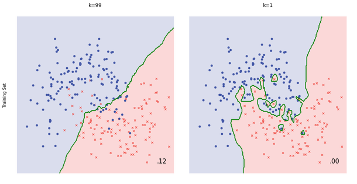
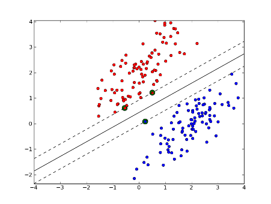
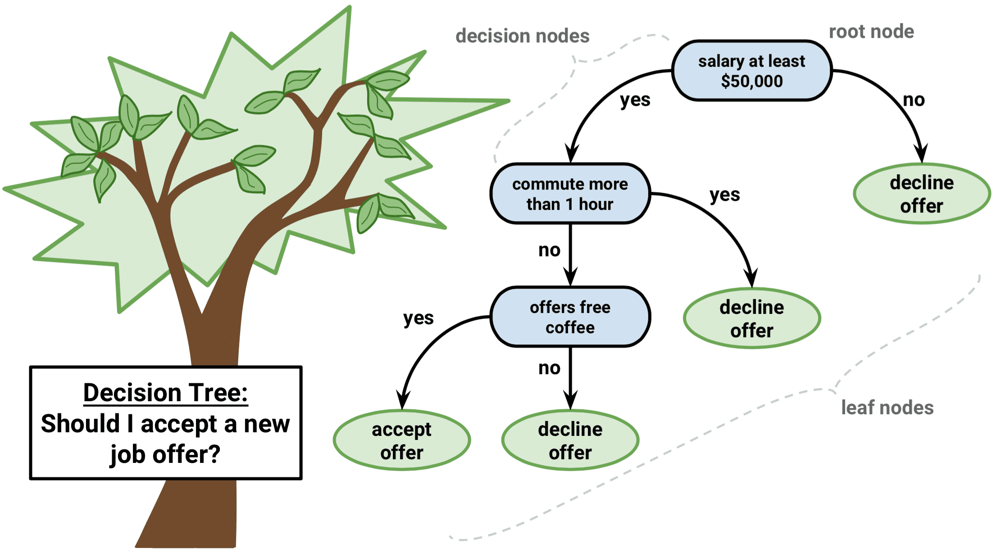
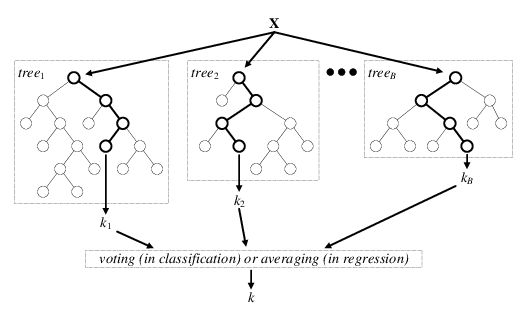

Classical Machine learning
Linear Regression
It attempts to model the relationship between two variables by fitting a linear equation to observed data. One variable is considered to be an explanatory variable, and the other is considered to be a dependent variable.
- Hypothesis Funtion:
- Cost Function:
- - the weight
- m - total number of samples
- To simplify our notation, we introduce the convention of letting
Close Form of Linear Regression
, which assume is invertible. Intuition see cs299-notes1>)
Logistic Regression
- Hypothesis Funtion:
- Cost Function:
- - the weight
- m - total number of samples
- To simplify our notation, we introduce the convention of letting
KNN
- Keywords: Non-parametric Method, Time consuming
- Given a data point, we compute the K nearest data points (neighbors) using certain distance metric (e.g., Euclidean metric). For classification, we take the majority label of neighbors; for regression, we take the mean of the label values.
- Note for KNN we don't train a model; we simply compute during inference time. This can be computationally expensive since each of the test example need to be compared with every training example to see how close they are.
- There are approximation methods can have faster inference time by partitioning the training data into regions (e.g., annoy)
- When K equals 1 or other small number the model is prone to overfitting (high variance), while when K equals number of data points or other large number the model is prone to underfitting (high bias)

Naive Bayes
TODO explain formula
- Naive Bayes (NB) is a supervised learning algorithm based on applying Bayes' theorem
- It is called naive because it builds the naive assumption that each feature are independent of each other
- NB can make different assumptions (i.e., data distributions, such as Gaussian, Multinomial, Bernoulli)
- Despite the over-simplified assumptions, NB classifier works quite well in real-world applications, especially for text classification (e.g., spam filtering)
- NB can be extremely fast compared to more sophisticated methods
SVM
Try to find a optimal hyperplane to separate two classes of data.
Cost function:
Prime Problem:
which is a quadratic program with variables to be optimized for and constraints.
KKT condition:
Orignal Blog from: http://mypages.iit.edu/~jwang134/posts/KKT-SVs-SVM.html
Applying the standard method of Lagrange multipliers, the Lagrangian function is:
Thus, the corresponding KKT conditions(Karush–Kuhn–Tucker_conditions) are as following:
if is the dataset is not sepratable:
Dual Problem:
which is a quadratic program with variables to be optimized for and inequality and equality constraints.
Why use dual problem?(answer from here)
Solving the primal problem, we obtain the optimal , but know nothing about the . In order to classify a query point we need to explicitly compute the scalar product , which may be expensive if is large.
Solving the dual problem, we obtain the (where for all but a few points - the support vectors). In order to classify a query point , we calculate:
This term is very efficiently calculated if there are only few support vectors. Further, since we now have a scalar product only involving data vectors, we may apply the kernel trick.
Can perform linear, nonlinear, or outlier detection (unsupervised) depending on the kernel funciton
Large margin classifier: using SVM we not only have a decision boundary, but want the boundary to be as far from the closest training point as possible
(Optional): Why Large margin classifier? Let's say a linear svm. If you take a look at the cost function, in order to minimize the cost, the inner product of need to be greater than 1 or less than -1. In this case, if is not the perfect decision boundary, it will have larger cost.
The closest training examples are called support vectors, since they are the points based on which the decision boundary is drawn
SVMs are sensitive to feature scaling
If C is very large, SVM is very sensitive to outliers.But if C is reasonably small, or a not too large, then you stick with the decision boundary more robust with outliers.

Decision tree

- Non-parametric, supervised learning algorithms
- Given the training data, a decision tree algorithm divides the feature space into regions. For inference, we first see which region does the test data point fall in, and take the mean label values (regression) or the majority label value (classification).
- Construction: top-down, chooses a question to split the data such that the target variables within each region are as homogeneous as possible. Calculate the gini impurity and information gain, then pick the question with the most information gain.
- Advantage:
- simply to understand & interpret, mirrors human decision making
Disadvantage:
- can overfit easily (and generalize poorly) if we don't limit the depth of the tree
- can be non-robust: A small change in the training data can lead to a totally different tree
- instability: sensitive to training set rotation due to its orthogonal decision boundaries
How to choose depth:
- It depends on the possible questions you can have for certain problems.
- Also you need to use validation data to see which depth works best
Random forests

An ensemble learning method for classification, regression and other tasks that operates by constructing a multitude of decision trees at training time and outputting the class that is the mode of the classes (classification) or mean prediction (regression) of the individual trees.
- The number of tree? In general, the more trees you use the better get the results. However, the improvement decreases as the number of trees increases, at a certain point the benefit in prediction performance from learning more trees will be lower than the cost in computation time for learning these additional trees.
Bagging in Random Forest
1. Suppose there are observations and M features in training data set. First, a sample from training data set is taken randomly with replacement. (Bagging for Dataset)
2. A subset of features() are selected randomly and whichever feature gives the best split is used to split the node iteratively. (Bagging for Feature)
3. The tree is grown to the largest.
4. Above steps are repeated and prediction is given based on the aggregation of predictions from number of trees.